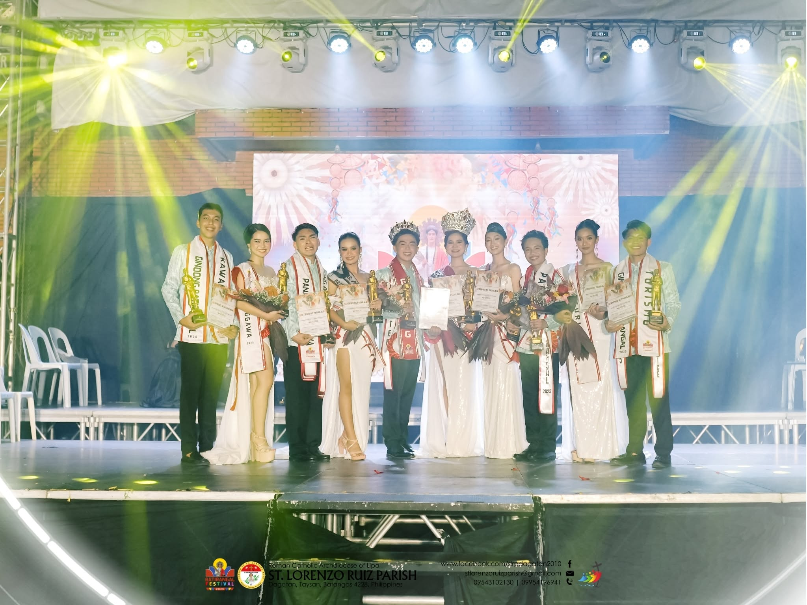
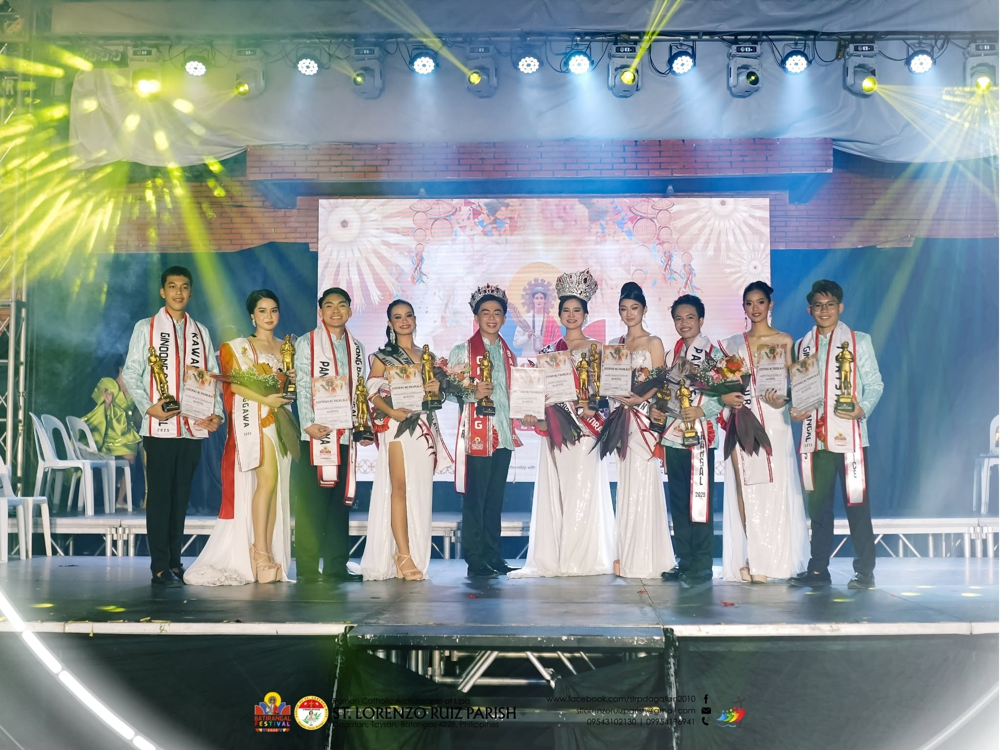

Festival activities
Explore cultural performances, competitions, and celebrations.
Learn about Taysan’s local heritage, parish communities, and visitor destinations. The date, origin, and programme for Batirangal should be confirmed with its organizers before making travel plans.


Three ways to step into the story of Batirangal and the town that brings it to life.
Explore cultural performances, competitions, and celebrations.
Discover local heritage, festival costumes, and traditions.
Explore attractions, local delicacies, and scenic destinations.


Taysan’s municipal tourism page gives us a starting point: a parish serving five communities, a livelihood built on barbecue-stick making, and a town whose living culture is still being documented.
San Lorenzo Ruiz Parish serves Bacao, Piña, Laurel, Dagatan, and Mapulo — together known as BAPILADAMA.
The municipality describes Tinindag as a thanksgiving connected to the town’s barbecue-stick-making tradition.
Batirangal’s official history and programme are being confirmed with organizers, and this site will grow with them.
Festival schedules, travel routes, and visitor tips — all in one place.
The Municipality of Taysan’s tourism page describes Tinindag Festival as a thanksgiving connected to the town’s barbecue-stick-making livelihood. This website could not verify an official history or schedule for Batirangal from the local-government sources reviewed.
An authoritative explanation of “Batirangal” was not available in the official local sources reviewed. The name’s meaning should be confirmed with festival organizers or community historians rather than guessed.
Taysan’s municipal tourism page says San Lorenzo Ruiz Parish serves Bacao, Piña, Laurel, Dagatan, and Mapulo, collectively known as BAPILADAMA. Read more about the parish and local livelihoods in the Educational Corner.
Taysan’s municipal tourism information describes Tinindag Festival and the town’s barbecue-stick-making livelihood, and identifies San Lorenzo Ruiz Parish as serving the five BAPILADAMA communities. An official Batirangal schedule and programme were not available in the local-government sources reviewed.
The municipal tourism page identifies the parish as serving Bacao, Piña, Laurel, Dagatan, and Mapulo.
Parish communityTaysan describes Tinindag as a thanksgiving celebration connected to its barbecue-stick-making livelihood.
Local livelihoodCheck with the event organizers for confirmed dates, activities, venue, and participation details.
Confirm before visitingPossible cultural and community highlights alongside the religious celebration.
Programme update — activities shown are proposed or awaiting confirmation. The official festival programme will be published here.
Cultural performances showcasing costumes, music, and choreography.
Performance
A proposed festival pageant celebrating local representatives.
Pageant
Proposed music, dance, and community presentations.
Culture
A proposed exhibition of colorful costumes and creative designs.
Exhibition
A proposed showcase of local vendors, delicacies, and products.
Market
Religious activities and Mass schedules, subject to parish confirmation.
FaithLearn about the parish communities, local livelihoods, and Batangas traditions. Where a source describes the province generally, it is not presented as a confirmed Batirangal custom.
Taysan’s municipal tourism page says the parish was established on September 19, 2010, and serves Bacao, Piña, Laurel, Dagatan, and Mapulo—the communities known together as BAPILADAMA.
Parish historyThe municipality describes Tinindag as a thanksgiving festival connected to Taysan’s barbecue-stick-making livelihood. It also describes crafting barbecue sticks as a family tradition and source of work for residents.
Livelihood & traditionThe Batangas Provincial Government describes Kumintang as a song-and-dance repertoire distinct to the province. This is regional cultural context; it does not establish that Kumintang is performed at Batirangal.
Provincial culturePhilippine heritage law and UNESCO’s 2003 Convention recognize that heritage includes living practices, rituals, and festive events—not only historic buildings. Learning from local people helps communities pass on their own stories accurately.
Cultural heritageHeritage includes living practices, rituals, and festive events — not only historic buildings. Learning from local people helps communities pass on their own stories accurately.
Sources: Municipality of Taysan — Tourism; Batangas Provincial Government — About Batangas; Republic Act No. 10066; UNESCO Convention for the Safeguarding of Intangible Cultural Heritage.






Photos and videos capture moments from Batirangal Festival celebrations and church heritage in Taysan.
Taysan is in eastern Batangas, within CALABARZON. Routes, opening hours, fares, and event details can change, so confirm them before setting out.
Taysan’s tourism page features Tinindag Festival but does not publish a Batirangal date or programme. Confirm the event, schedule, venue, and any fees with its organizers before travelling.
The province describes road approaches to Batangas via Cavite/Tagaytay and Laguna/Calamba–Sto. Tomas. These are routes into the province, not a confirmed direct public-transport itinerary to Taysan; check current connections and fares with operators.
Use the map for current road directions. For remote or outdoor destinations, check access, weather, local guidance, and permission in advance; do not assume public transport or visitor facilities are available.
The following places appear on Taysan’s municipal tourism page. Confirm current access, operating status, and visitor arrangements locally.
The municipal listing includes San Lorenzo Ruiz Parish, Immaculate Conception Chapel, and Our Lady of Mercy Parish. Be respectful during services and ask parish staff about visiting.
Faith & heritageThe LGU describes Mt. Baklas in Dagatan and Bacao Falls near Bundok ng Maynila, noting an approximately 30-minute walk down to the falls after reaching the mountain top. Check current trail conditions and local guidance before going.
Nature & outdoorsTaysan’s tourism page lists Yellowbell Resort and Hotel and Highlands View Resort. Contact each property directly to verify availability, rates, amenities, and booking arrangements.
Stay in TaysanSources: Municipality of Taysan — Tourism and Batangas Provincial Government — About Batangas. Map directions are provided by Google Maps; check the route and travel conditions before departure.
Pick a place on the parish grounds and follow its illustrated route from the main gate. Drag to look around, and scroll or pinch to zoom.
Visit local landmarks and look for Batangas favorites at eateries and community vendors. Food availability and visitor access may vary, so check locally before your trip.
See the chapel and its hillside setting, and learn about the parish community at the heart of Taysan's faith traditions.
Heritage
View the chapel and its landscaped grounds. Please observe parish guidance when visiting.
Church
See the parish interior and its ornate altar. Check locally for service times and visitor information.
Church
Take in the green hillside scenery. Confirm local access and safety guidance before visiting.
Nature
Enjoy a glimpse of the falls and forest pool. Confirm current access and safety conditions with the community before your trip.
Nature
Browse colorful woven crafts and other handmade goods. Ask local vendors about products made in Taysan.
Community finds
Resort and hotel listing in Taysan. Contact the property to confirm rates, availability, and amenities.
Accommodation
Resort listing in Taysan. Contact the property to confirm rates, availability, and visitor details.
Resort
Resort listing in Taysan. Contact the property to confirm rates, availability, and visitor details.
Resort
A local café and food spot. Check with the business for current menu and opening hours.
Cafe & food
Relax in the garden-style dining area and enjoy a local food stop. Check with the business for current menu and opening hours.
Food & beverage
Choose from colorful iced milk tea and specialty drinks. Check with the shop for current flavors and opening hours.
Drinks
Gather with friends and family over a meal in the café’s colorful, open-air setting. Check with the shop for its current menu and hours.
Drinks
Browse sweet drinks and treats for a dessert break. Check with the shop for current products and hours.
Desserts
Visit the café’s open-air dining space for a relaxed stop. Check with the business for its current menu and hours.
Cafe & foodAnswers below distinguish information published by local government from festival details that still need confirmation. Check the linked official sources before making travel plans.
The Municipality of Taysan’s tourism page does not currently list a Batirangal date or schedule. It also features Tinindag Festival, described as a thanksgiving for the barbecue-stick-making livelihood; this does not confirm Batirangal’s schedule. Confirm the date and programme with Batirangal’s organizers before travelling.
A current official Batirangal programme was not available in the municipal tourism information reviewed. Do not rely on proposed activities as confirmed; check announcements from the festival organizers. The municipality describes Tinindag Festival separately as connected to local barbecue-stick making.
Taysan has a San Lorenzo Ruiz Parish serving BAPILADAMA, according to the municipal tourism page. That source does not establish the religious programme of Batirangal, so confirm Masses, processions, and other parish activities with the parish or event organizers.
I could not verify an authoritative explanation of the name “Batirangal” in the official local sources reviewed. The name’s meaning should be confirmed with the organizers or community historians rather than guessed.
No official Batirangal ticket or fee information was found in the municipal tourism listing. Ask the organizers whether registration, fees, or reserved seating apply to a specific activity.
Taysan is in eastern Batangas, within the province’s District IV. The provincial government describes road approaches to Batangas via Cavite/Tagaytay and Laguna/Calamba–Sto. Tomas; these are not a confirmed direct public-transport itinerary to Taysan. Use the map for road directions and verify current bus, van, transfer, and fare information with transport operators.
The Municipality of Taysan’s tourism page lists Yellowbell Resort and Hotel and Highlands View Resort. Contact the properties directly to confirm current availability, rates, amenities, and booking arrangements.
For outdoor activities, comfortable clothing, walking shoes, and sun or rain protection are practical. If visiting a church, dress respectfully and follow parish guidance.
The municipality highlights Tinindag Festival and Taysan’s barbecue-stick-making livelihood, and its tourism page lists local products. Discover Taysan also includes local food and shop listings; check directly with vendors about current products and hours.
Accessibility information for festival venues and routes was not available in the sources reviewed. Contact the venue or organizers in advance to ask about step-free access, seating, toilets, and assistance.
Follow signs and instructions from event or parish staff. Ask permission before photographing individuals, and avoid disrupting worship or private activities.
The municipal tourism page says San Lorenzo Ruiz Parish serves the five BAPILADAMA communities: Bacao, Piña, Laurel, Dagatan, and Mapulo. The organizers can confirm which communities and groups are participating in a particular festival programme.
Ask the festival organizers or relevant barangay/parish whether an activity is open to visitors and whether advance registration is needed. The official programme and participation rules were not available in the municipal tourism information reviewed.
Check announcements from the Municipality of Taysan, the relevant parish, or festival organizers. The municipal Tourism page is a useful starting point, but it does not currently publish Batirangal’s schedule.
Yes. Visit the Contact page to rate the festival and leave a public review. Your feedback helps the community improve future celebrations.
Use the Contact page for general inquiries. Official email addresses and contact numbers will be published once provided by the festival organizers.
This is an independent informational site, not an official municipal or festival website. Sources are linked where available; dates, programmes, prices, and visitor arrangements should be confirmed with the relevant local authority or organizer.
We'll share it with the festival organizers and update this page with the answer.
The official date will be announced after confirmation.
Visit the Tourist Guide tab for updates.
Visit the Discover Taysan tab.
Connecting to the shared review book…